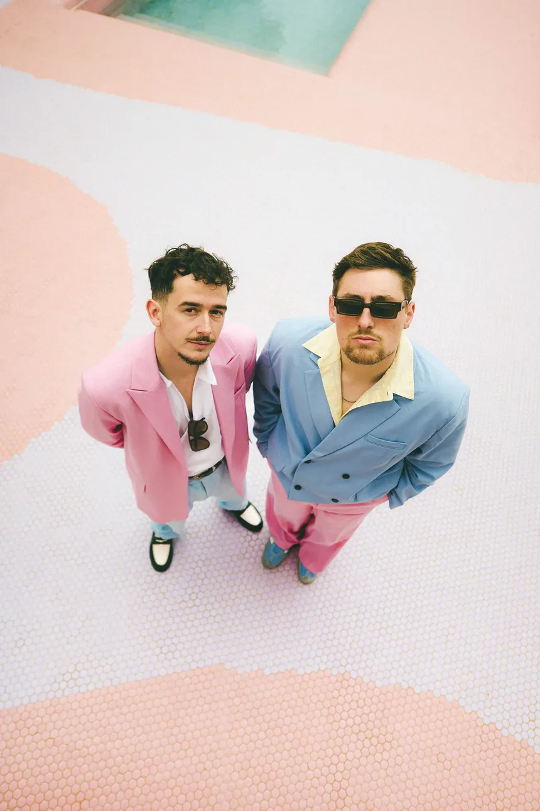
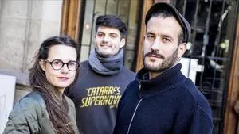

The Tyets es un grupo musical catalán formado en 2018 por Oriol de Ramon y Xavier Coca, dos amigos originarios de Mataró. Empezaron su carrera musical mezclando trap y reguetón en catalán, un estilo que llamaron «trapetón». Su popularidad creció especialmente en 2023 gracias a su álbum Èpic Solete y a la canción «Coti x Coti», que mezcla reguetón con sardana. Actualmente son uno de los grupos más reconocidos de la música urbana en catalán.

Els Catarres es un grupo musical catalán formado en 2019 por Alex Gómez y Pol Sánchez, dos amigos originarios de Barcelona. Su estilo se basa en la fusión de reggaeton y trap en catalán, creando una sonoridad única que ha captado la atención del público joven. Han publicado varios sencillos que han tenido éxito en plataformas digitales.
Mike Towers es un artista musical catalán nacido en 2000, conocido por su estilo único que combina trap, reggaeton y elementos de la cultura urbana. Ha ganado popularidad a través de sus canciones en catalán, destacando por su energía y autenticidad. Su música ha sido ampliamente difundida en redes sociales y plataformas de streaming.